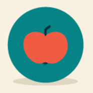

请选择方法以确定五大重点
A.后台分析得出五大重点
B.直接选择五大重点
方法A:请选择一下任意标签
1.沟通
关注焦点:
如何引导
任性
不听话
原因:
不自信
不被尊重
不能倾听
话语理解
情绪调控
被忽视
遇到
没有支持
2.人际能力
关注焦点:
环境适应
被认可
不愿意打招呼
生存能力
竞争能力
自我保护力
不能守规矩
原因:
不自信
自尊心
沟通方式
自我中心
互动体验
感同身受
情绪调控
利他
关注与支持
守规矩
尊重
适宜
共识
执行
调整
守规矩
3.人格
关注焦点
孤僻
自闭
忧郁
敏感
安全感
自觉性
小气
自尊心
责任心
同情心
忌妒
粘人
自卑
虚荣心
自私
胆小
脾气大
原因:
自尊
责任
独立性
自我意识
勇气
韧性
安全感
爱
4.学习力
关注焦点
学得浅
兴趣或没动力
激励或压力
不去补习班
拖沓
原因:
速度慢
做不来
求关注
不喜欢这门课
身体不舒服
5.情绪
关注焦点
易被消极情绪控制
原因:
消极情绪
情绪表达方式
理解
沟通
发现
改进
上一页
[1]
[2]
[3]
[4]
[5]
下一页
返回
确定
方法B:请选择5个维度
情绪力
人际力
自主力
专注力
意志力

学习认知
学习策略
返回
确定